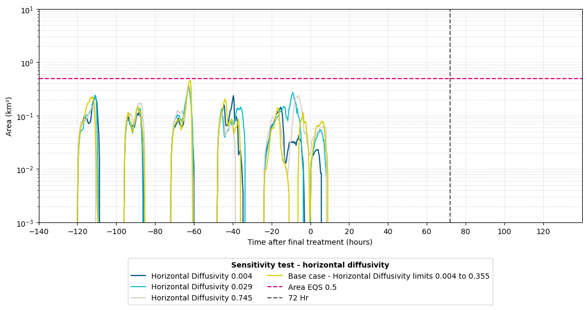

Sensitivity test - Different horizontal diffusion coefficients#
This script can be used to find area exceedance of a tracer at diffrent threshold values.#
import xarray as xr
import tfv.xarray
import numpy as np
import pandas as pd
import matplotlib.pyplot as plt
from matplotlib import cm
from matplotlib.ticker import FixedLocator
User inputs
#Read tuflowfv output files
file_path_Neap_base = r"X:\Scratch1\aqua_dis_3hr_neap_001.nc"
file_path_Neap_SC01 = r"X:\Scratch1\aqua_dis_sensitivity_hz_dif_0.004_neap_001.nc"
file_path_Neap_SC02 = r"X:\Scratch1\aqua_dis_sensitivity_hz_dif_0.029_neap_002.nc"
file_path_Neap_SC03 = r"X:\Scratch1\aqua_diff_002\RT_dis_sensitivity_hz_dif_0.745_neap_002.nc"
my_thresholds = [40]
Read in Files
# Open the datasets as arrays for both files
fv_Neap_base = xr.open_dataset(file_path_Neap_base, decode_times=False).tfv
fv_Neap_SC01 = xr.open_dataset(file_path_Neap_SC01, decode_times=False).tfv
fv_Neap_SC02 = xr.open_dataset(file_path_Neap_SC02, decode_times=False).tfv
fv_Neap_SC03 = xr.open_dataset(file_path_Neap_SC03, decode_times=False).tfv
---------------------------------------------------------------------------
KeyError Traceback (most recent call last)
File ~\.conda\envs\coastal\lib\site-packages\xarray\backends\file_manager.py:209, in CachingFileManager._acquire_with_cache_info(self, needs_lock)
208 try:
--> 209 file = self._cache[self._key]
210 except KeyError:
File ~\.conda\envs\coastal\lib\site-packages\xarray\backends\lru_cache.py:55, in LRUCache.__getitem__(self, key)
54 with self._lock:
---> 55 value = self._cache[key]
56 self._cache.move_to_end(key)
KeyError: [<class 'netCDF4._netCDF4.Dataset'>, ('X:\\Scratch1\\aqua_dis_3hr_neap_001.nc',), 'r', (('clobber', True), ('diskless', False), ('format', 'NETCDF4'), ('persist', False)), '78010d04-ad87-48b1-9f18-fe01915a8dc7']
During handling of the above exception, another exception occurred:
FileNotFoundError Traceback (most recent call last)
Cell In[3], line 2
1 # Open the datasets as arrays for both files
----> 2 fv_Neap_base = xr.open_dataset(file_path_Neap_base, decode_times=False).tfv
3 fv_Neap_SC01 = xr.open_dataset(file_path_Neap_SC01, decode_times=False).tfv
4 fv_Neap_SC02 = xr.open_dataset(file_path_Neap_SC02, decode_times=False).tfv
File ~\.conda\envs\coastal\lib\site-packages\xarray\backends\api.py:539, in open_dataset(filename_or_obj, engine, chunks, cache, decode_cf, mask_and_scale, decode_times, decode_timedelta, use_cftime, concat_characters, decode_coords, drop_variables, inline_array, backend_kwargs, **kwargs)
527 decoders = _resolve_decoders_kwargs(
528 decode_cf,
529 open_backend_dataset_parameters=backend.open_dataset_parameters,
(...)
535 decode_coords=decode_coords,
536 )
538 overwrite_encoded_chunks = kwargs.pop("overwrite_encoded_chunks", None)
--> 539 backend_ds = backend.open_dataset(
540 filename_or_obj,
541 drop_variables=drop_variables,
542 **decoders,
543 **kwargs,
544 )
545 ds = _dataset_from_backend_dataset(
546 backend_ds,
547 filename_or_obj,
(...)
555 **kwargs,
556 )
557 return ds
File ~\.conda\envs\coastal\lib\site-packages\xarray\backends\netCDF4_.py:572, in NetCDF4BackendEntrypoint.open_dataset(self, filename_or_obj, mask_and_scale, decode_times, concat_characters, decode_coords, drop_variables, use_cftime, decode_timedelta, group, mode, format, clobber, diskless, persist, lock, autoclose)
551 def open_dataset(
552 self,
553 filename_or_obj,
(...)
568 autoclose=False,
569 ):
571 filename_or_obj = _normalize_path(filename_or_obj)
--> 572 store = NetCDF4DataStore.open(
573 filename_or_obj,
574 mode=mode,
575 format=format,
576 group=group,
577 clobber=clobber,
578 diskless=diskless,
579 persist=persist,
580 lock=lock,
581 autoclose=autoclose,
582 )
584 store_entrypoint = StoreBackendEntrypoint()
585 with close_on_error(store):
File ~\.conda\envs\coastal\lib\site-packages\xarray\backends\netCDF4_.py:376, in NetCDF4DataStore.open(cls, filename, mode, format, group, clobber, diskless, persist, lock, lock_maker, autoclose)
370 kwargs = dict(
371 clobber=clobber, diskless=diskless, persist=persist, format=format
372 )
373 manager = CachingFileManager(
374 netCDF4.Dataset, filename, mode=mode, kwargs=kwargs
375 )
--> 376 return cls(manager, group=group, mode=mode, lock=lock, autoclose=autoclose)
File ~\.conda\envs\coastal\lib\site-packages\xarray\backends\netCDF4_.py:323, in NetCDF4DataStore.__init__(self, manager, group, mode, lock, autoclose)
321 self._group = group
322 self._mode = mode
--> 323 self.format = self.ds.data_model
324 self._filename = self.ds.filepath()
325 self.is_remote = is_remote_uri(self._filename)
File ~\.conda\envs\coastal\lib\site-packages\xarray\backends\netCDF4_.py:385, in NetCDF4DataStore.ds(self)
383 @property
384 def ds(self):
--> 385 return self._acquire()
File ~\.conda\envs\coastal\lib\site-packages\xarray\backends\netCDF4_.py:379, in NetCDF4DataStore._acquire(self, needs_lock)
378 def _acquire(self, needs_lock=True):
--> 379 with self._manager.acquire_context(needs_lock) as root:
380 ds = _nc4_require_group(root, self._group, self._mode)
381 return ds
File ~\.conda\envs\coastal\lib\contextlib.py:135, in _GeneratorContextManager.__enter__(self)
133 del self.args, self.kwds, self.func
134 try:
--> 135 return next(self.gen)
136 except StopIteration:
137 raise RuntimeError("generator didn't yield") from None
File ~\.conda\envs\coastal\lib\site-packages\xarray\backends\file_manager.py:197, in CachingFileManager.acquire_context(self, needs_lock)
194 @contextlib.contextmanager
195 def acquire_context(self, needs_lock=True):
196 """Context manager for acquiring a file."""
--> 197 file, cached = self._acquire_with_cache_info(needs_lock)
198 try:
199 yield file
File ~\.conda\envs\coastal\lib\site-packages\xarray\backends\file_manager.py:215, in CachingFileManager._acquire_with_cache_info(self, needs_lock)
213 kwargs = kwargs.copy()
214 kwargs["mode"] = self._mode
--> 215 file = self._opener(*self._args, **kwargs)
216 if self._mode == "w":
217 # ensure file doesn't get overridden when opened again
218 self._mode = "a"
File src\netCDF4\_netCDF4.pyx:2463, in netCDF4._netCDF4.Dataset.__init__()
File src\netCDF4\_netCDF4.pyx:2026, in netCDF4._netCDF4._ensure_nc_success()
FileNotFoundError: [Errno 2] No such file or directory: b'X:\\Scratch1\\aqua_dis_3hr_neap_001.nc'
Extract data
# Extract data at a certain depth range for both files
fv_2d_trace_Neap_base = fv_Neap_base.get_sheet('TRACE_1', datum='depth', limits=(0, 4))
fv_2d_trace_Neap_SC01 = fv_Neap_SC01.get_sheet('TRACE_1', datum='depth', limits=(0, 4))
fv_2d_trace_Neap_SC02 = fv_Neap_SC02.get_sheet('TRACE_1', datum='depth', limits=(0, 4))
fv_2d_trace_Neap_SC03 = fv_Neap_SC03.get_sheet('TRACE_1', datum='depth', limits=(0, 4))
...extracting sheet data: 100%|████████████████████████████████████████████████████| 1225/1225 [01:13<00:00, 16.76it/s]
...extracting sheet data: 100%|████████████████████████████████████████████████████| 1225/1225 [02:46<00:00, 7.36it/s]
...extracting sheet data: 100%|████████████████████████████████████████████████████| 1225/1225 [02:34<00:00, 7.93it/s]
...extracting sheet data: 100%|████████████████████████████████████████████████████| 1225/1225 [02:33<00:00, 7.99it/s]
# Specify start, end time, and final treatment time
Neap_Start_Time = pd.to_datetime('2022-10-13 00:00:00', format='%Y-%m-%d %H:%M:%S')
Neap_Final_Treatment = pd.to_datetime('2022-10-19 04:00:00', format='%Y-%m-%d %H:%M:%S')
Create data frames
# Create DataFrames for both files
df_Neap_base = pd.DataFrame(index=fv_Neap_base['Time'])
df_Neap_SC01 = pd.DataFrame(index=fv_Neap_SC01['Time'])
df_Neap_SC02 = pd.DataFrame(index=fv_Neap_SC02['Time'])
df_Neap_SC03 = pd.DataFrame(index=fv_Neap_SC03['Time'])
df_Neap_base.index = df_Neap_base.index.strftime('%d/%m/%Y %H:%M:%S')
df_Neap_SC01.index = df_Neap_SC01.index.strftime('%d/%m/%Y %H:%M:%S')
df_Neap_SC02.index = df_Neap_SC02.index.strftime('%d/%m/%Y %H:%M:%S')
df_Neap_SC03.index = df_Neap_SC03.index.strftime('%d/%m/%Y %H:%M:%S')
df_Neap_base.index = (pd.to_datetime(df_Neap_base.index, format='%d/%m/%Y %H:%M:%S') - Neap_Final_Treatment) / pd.Timedelta(hours=1)
df_Neap_SC01.index = (pd.to_datetime(df_Neap_SC01.index, format='%d/%m/%Y %H:%M:%S') - Neap_Final_Treatment) / pd.Timedelta(hours=1)
df_Neap_SC02.index = (pd.to_datetime(df_Neap_SC02.index, format='%d/%m/%Y %H:%M:%S') - Neap_Final_Treatment) / pd.Timedelta(hours=1)
df_Neap_SC03.index = (pd.to_datetime(df_Neap_SC03.index, format='%d/%m/%Y %H:%M:%S') - Neap_Final_Treatment) / pd.Timedelta(hours=1)
Calculate area exceedance
for tr in my_thresholds:
ind = fv_2d_trace_Neap_base['TRACE_1'] > tr #This is nTimesteps X nCells
area_filtered = fv_2d_trace_Neap_base['cell_A'].values[None,] * ind #That magical None will handle broadcasting so that the shapes match.Equivalent to doing ones (nTimesteps)X if you were in Matlab
total_area = area_filtered.sum(dim='NumCells2D')
total_area_km2 = total_area.values / 1000000 # Convert total area from m² to km²
total_area_km2 = total_area_km2.reshape(-1, 1) # Reshape array to match index length
df_Neap_base[f'Base case - Horizontal Diffusivity limits 0.004 to 0.355'] = total_area_km2
ind = fv_2d_trace_Neap_SC01['TRACE_1'] > tr #This is nTimesteps X nCells
area_filtered = fv_2d_trace_Neap_SC01['cell_A'].values[None,] * ind #That magical None will handle broadcasting so that the shapes match.Equivalent to doing ones (nTimesteps)X if you were in Matlab
total_area = area_filtered.sum(dim='NumCells2D')
total_area_km2 = total_area.values / 1000000 # Convert total area from m² to km²
total_area_km2 = total_area_km2.reshape(-1, 1) # Reshape array to match index length
df_Neap_SC01[f'Horizontal Diffusivity 0.004'] = total_area_km2
ind = fv_2d_trace_Neap_SC02['TRACE_1'] > tr #This is nTimesteps X nCells
area_filtered = fv_2d_trace_Neap_SC02['cell_A'].values[None,] * ind #That magical None will handle broadcasting so that the shapes match.Equivalent to doing ones (nTimesteps)X if you were in Matlab
total_area = area_filtered.sum(dim='NumCells2D')
total_area_km2 = total_area.values / 1000000 # Convert total area from m² to km²
total_area_km2 = total_area_km2.reshape(-1, 1) # Reshape array to match index length
df_Neap_SC02[f'Horizontal Diffusivity 0.029'] = total_area_km2
ind = fv_2d_trace_Neap_SC03['TRACE_1'] > tr #This is nTimesteps X nCells
area_filtered = fv_2d_trace_Neap_SC03['cell_A'].values[None,] * ind #That magical None will handle broadcasting so that the shapes match.Equivalent to doing ones (nTimesteps)X if you were in Matlab
total_area = area_filtered.sum(dim='NumCells2D')
total_area_km2 = total_area.values / 1000000 # Convert total area from m² to km²
total_area_km2 = total_area_km2.reshape(-1, 1) # Reshape array to match index length
df_Neap_SC03[f'Horizontal Diffusivity 0.745'] = total_area_km2
Plotting
fig, ax = plt.subplots(figsize=(12, 6))
fig.subplots_adjust(left=0.1, right=0.95, top=0.95, bottom=0.28)
# Plot the data for the first file
df_Neap_SC01.plot(ax=ax, logy=True, color='#005581', label='Horizontal Diffusivity 0.004')
# Plot the data for the second file
df_Neap_SC02.plot(ax=ax, logy=True, color='#1ABDC9', label='Horizontal Diffusivity 0.0299')
# Plot the data for the third file
df_Neap_SC03.plot(ax=ax, logy=True, color='#D8D0C7', label='Horizontal Diffusivity 0.745')
# Plot the data for the first file
df_Neap_base.plot(ax=ax, logy=True, color='#D4D00F', label='Base case - Horizontal Diffusivity limits 0.004 to 0.355')
ax.set_xlabel('Time after final treatment (hours)')
ax.set_ylabel('Area (km²)')
ax.set_ylim(0.001, 10)
ax.set_xlim(-140, 140)
ax.set_xticks(np.arange(-140, 140, 20))
#Add EQS lines
ax.hlines(y=0.5, xmin=-140, xmax=140, colors='#E20177', linestyles='dashed', label='Area EQS 0.5')
ax.vlines(x=72, ymin=0, ymax=10, colors='#4F5650', linestyles='dashed', label='72 Hr')
# Add legend
# legend = ax.legend(loc='upper right', bbox_to_anchor=(1.2, 1), ncol=1, title='72 hr Area EQS')
# plt.setp(legend.get_title(), weight='bold')
# Update the legend
legend = ax.legend(loc='upper center', bbox_to_anchor=(0.5, -0.15), ncol=2, title='Sensitivity test - horizontal diffusivity')
plt.setp(legend.get_title(), weight='bold')
# Add minor gridlines for the logarithmic y-axis
ax.yaxis.grid(True, which='both', linestyle=':', linewidth=0.5)
ax.xaxis.grid(True, which='major', linestyle=':', linewidth=0.5)
plt.xticks(rotation=0)
# Save plot as PNG image with DPI of 300
fig.savefig('../figures/aqua_72hr_sensitivity_test_hz_diffusionv2.png', dpi=300)
plt.show()
